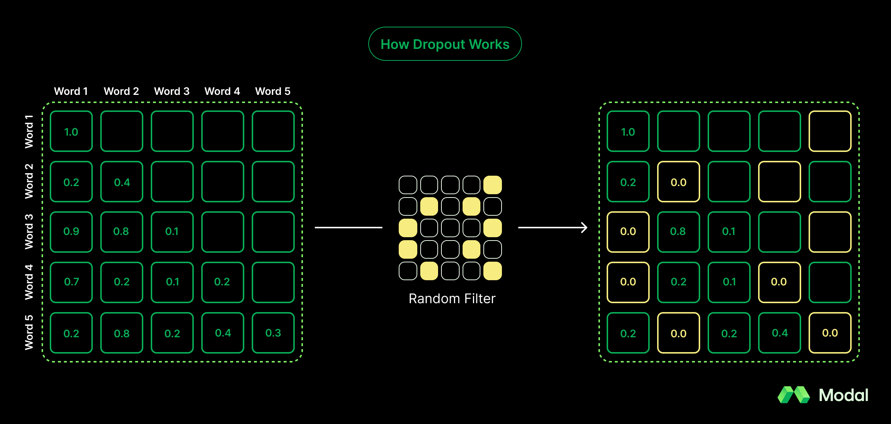
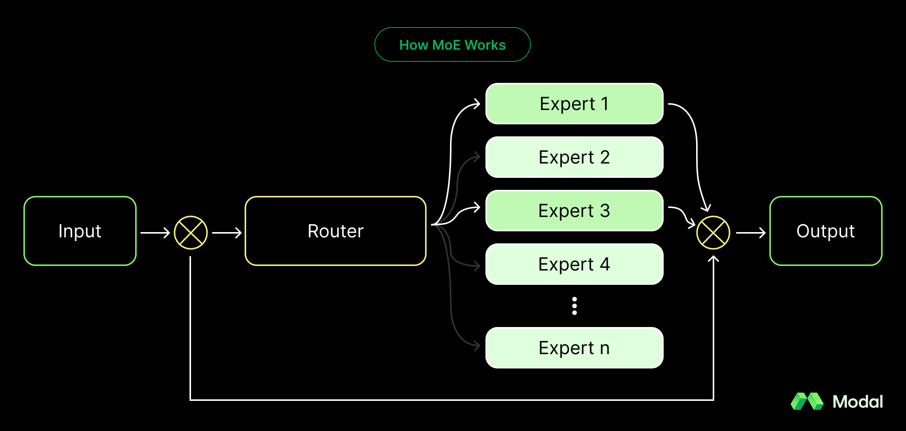

How LLM architecture has evolved from GPT-2 to gpt-oss
Compared to its predecessor (GPT-2), gpt-oss is a significantly more efficient model for developers, with the capacity to carry-out inference with just 16GB of memory.
In early August, OpenAI launched its first open-weight language model since GPT-2 in 2019: gpt-oss. The model has two variants: gpt-oss-120b and gpt-oss-20b, both released under the Apache 2.0 license. Both are customizable, support Chain-of-Thought (CoT) reasoning, few-shot function calling, tool use, and support for structured outputs.
These models were announced with a fair amount of fanfare. gpt-oss-120b was touted to have near-parity with OpenAI’s closed-source o4-mini model. Meanwhile, gpt-oss-20b was likened to o3-mini. Given the industry success of both o4-mini and o3-mini, these are noteworthy comparisons for an open-source model. However, what’s most interesting about gpt-oss, in particular gpt-oss-20b, is it’s low footprint, enabling it to run on very modest set-ups.
Given that it’s been over half a decade since OpenAI’s last open-weight model, we wanted to compare how gpt-oss’s architecture has modernized, how it achieves efficiency in inference, and the implications for open-source use. We’ll primarily compare gpt-oss with GPT-2, as that side-by-side showcases how OpenAI has rethought about model architecture.
Model Architecture
GPT-2 and gpt-oss are both decoder-only models, a class of models where the input is treated as the start of the output. Decoder-only models have been the popular model architecture following the well-known Attention is All You Need from 2017.
However, GPT-2 and gpt-oss have some distinctions. Given the lapse of time between the models, these decisions should be viewed as overall advancements in model architecture as opposed to reactionary changes to GPT-2. These changes might trivially degrade model performance, but they enable developers to run inference for significantly cheaper.
gpt-oss removes Dropout
GPT-2, similar to other models at the time, featured a dropout stage. Dropout is a pre-training stage where random attention scores are set to zero. The hypothesis was that these zeroed out scores prevent models from overly-imitating training data (overfitting).

This hypothesis was proven false with time, as modern layers are robust to avoid overfitting and modern datasets are vast enough to better resemble real data. Now, dropout is just an extra compute requirement with no material benefit. Accordingly, most models, including closed-weight models, have eliminated dropout from their architecture. To no surprise, gpt-oss also nixed dropout.
The Takeaway: Relative to GPT-2’s architecture, gpt-oss removing dropout increases the model’s accuracy (and trivially saves on compute).
gpt-oss favors Swish over GLU for the activation function
Transformer models depend on neurons, which are artificial mathematical constructs that imitate how brain neurons work. Neurons have two states: inactive and activated, determining whether they should pass forward to the next cycle of training. A neuron’s state is determined by an activation function, calculated from the individual inputs and their weights.
GPT-2 used a Gaussian Error Linear Unit (GELU or GLU) activation function, represented mathematically as (x / 2) (1 + erf(x / sqrt(2))). Many models have replaced GELU with Swish, which uses a sigmoid function instead. When plotted side-by-side, GELU and Swish look similar, but Swish is significantly easier on compute despite GELU showing slightly better performance.
The Takeaway: Relative to GPT-2’s architecture, gpt-oss switch to Swish improves the model’s efficiency with a trivial degradation to model performance.
gpt-oss incorporates Mixture-of-Experts (MoE)
A recently popular technique to increase the capacity of a model’s knowledge without heavily impacting compute needs is Mixture-of-Experts. With roots in the 1990s, mixture-of-experts involves a set of discrete layers (known as experts) that could number to the thousands. These experts are consulted every pass, but only the top-K experts are chosen by a router sub-module, where K = 1, 2, or another low integer. Accordingly, a model having thousands of experts minimally impacts compute, because each stage only involves consulting the “top experts” based on a router.

As an analogy, consider a university directory of professors. When a student has a question, they could quickly search the directory for the most relevant professors and consult the best 1-2 professors. Because each professor is smart, it’s entirely okay if the chosen professors isn’t hypothetically the best expert—rather, by crudely looking for the most pertinent professors, they’re more likely, on average, to learn the most.
The Takeaway: MoE expands the model’s knowledge, allowing it to include significantly more parameters without exploding compute needs.
gpt-oss leverages Sliding-Window Attention
GPT-2 uses a technique called Multi-Head Attention (MHA). MHA has multiple queries, independent vectors trained on different perspectives of tokens, each with their own keys and values. Instead, gpt-oss leverages a new technique called Grouped Query Attention (GQA), where query heads are paired with shared key heads and value heads (while keeping distinct query values). This technique has a small impact to model performance but creates massive savings for memory.
gpt-oss pairs GQA with another technique called Sliding-Window Attention, where the considered values in an attention’s context is limited to a sliding window of positionally-close values. The resulting pattern is known as a locally-banded attention pattern, in contrast to a dense pattern when the full context is considered.
gpt-oss leverages Sliding-Window Attention in an alternating fashion, where dense and locally-banded patterns are used in different passes.
The Takeaway: gpt-oss’ use of Sliding-window Attention and GQA saves on compute and memory with limited impact to model performance.
gpt-oss uses RMSNorm over LayerNorm as a normalization layer
Transformer models have normalization layers that mathematically normalize activation values. Normalization layers do not change which neurons are and aren’t activated—instead, they scale and center values so that they’re not widely different. For normalization, values might look like <4.2, 5.2, -41.4>; after normalization, values look closer to <0.14, 0.24, -0.80> . These normalized values are then passed to the next stage of training.
Previously, GPT-2 used LayerNorm, a function that would normalize values so that their mean equaled 0.0 and variance equaled 1.0. Instead, gpt-oss uses RMSNorm, a less expensive normalization function that shifts mean and variance to a reasonable range, while not centering it to zero. RMSNorm is simple: the root mean square of activations without subtracting the mean. While RMSNorm is less accurate than LayerNorm, the degradation is minimal and the compute savings are significant.
The Takeaway: gpt-oss’ use of RMSNorm saves on compute with little impact to model performance.
gpt-oss uses RoPE over Positional Embeddings as its positional encoding method
Positional encoding is what informs the model of the placement of a token in a sequence. GPT-2 used traditional positional embeddings, where each token was assigned a sequential value (e.g. 1, 2, 3 etc).
gpt-oss, meanwhile, uses a more modern strategy: Rotary Positional Embeddings or RoPE. RoPE rotates a token’s query and key vectors where the angle is determined by the token’s position. The rotation happens on a complex number plane; accordingly, RoPE encodes relative position into the attention computation without having to separately track embeddings.
RoPE has a few benefits. By transforming the attention values directly, RoPE doesn’t have to store sequential values separately. This makes it easier to handle longer context windows since the length of a sequence doesn’t impact the storage complexity.
The Takeaway: gpt-oss switching to RoPE increases the model’s ability to handle longer contexts.
Performance for gpt-oss
From a performance standpoint, comparing gpt-oss against GPT-2 is not a worthy comparison; gpt-oss was trained on far better data with a modern architecture. In fact, most modern benchmarks don’t even have GPT-2 metrics; the 2019 model preceded comparison sites like LMArena. Instead, gpt-oss is better compared against other open-weight models like Qwen3 by Alibaba or Mistral’s flagship.
In particular, Qwen3 is a great comparison. Similar to gpt-oss, Qwen3 30b uses a MoE configuration with GQA. Specifically, Qwen3 30B supports 128 experts per layer and 32 query heads with 4 key-value heads. In comparison, gpt-oss 20B uses 32 experts per layer with 64 query heads with 8 key-value heads.
Based on OpenAI’s own internal tests, gpt-oss-120b and gpt-oss-20b both outperform Qwen3’s highest parameter variant, Qwen3 235B, at competition math. Meanwhile, Qwen3 235B outperforms both gpt-oss models at PhD-level science questions, but only marginally. These are quite impressive numbers given that both gpt-oss models are considerably smaller than Qwen3’s thinking model. In fact, gpt-oss-20b is ten times smaller.
Why is gpt-oss a big deal?
Generally speaking, OpenAI is the flagship of foundation model developers. OpenAI’s GPT-3 initially set-off the new age of AI, and OpenAI’s leading proprietary models—GPT 4o, o3, and now GPT 5—continue to command the attention of the community. However, OpenAI lacked an open weight model that was competitive with modern alternatives, forcing open weight developers to use Qwen3 by Alibaba or Mistral.
Given OpenAI’s positioning in the AI space, it’s entirely possible that the branding alone will command immense popularity for gpt-oss amongst open weight developers. That said, the model’s incredible statistics gives developers a stronger, mathematically-backed reason to switch over: gpt-oss pulls incredible numbers despite having a much smaller parameter count compared to its closes competition. This is strongly in thanks to its improved architecture.
Today, gpt-oss is freely available to download on HuggingFace and can run within 80GB and 16GB of memory respective to the model’s variant. You can deploy this on Modal today using our gpt-oss vLLM example.
Generally speaking, open models empower developers and organizations to innovate, customize, and deploy AI freely and transparently. They lower barriers to entry, fostering broader access and safer, more democratic AI development. opt-oss is a huge entry by OpenAI and continues to pave the way for an AI-forward future.